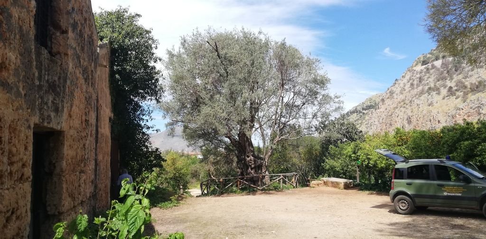

Aree e percorsi strategici di intervento
Giardini storici
I giardini ornamentali all'italiana (quello che da Piazza Niscemi si apre con i due "padiglioni dei reali cacciatori" conduce alla Casina Cinese, noto come Villa del Carabiniere), alla francese (con il parterre de broderie e un berceau), i giardini all'inglese (della Città dei Ragazzi e di Villa Niscemi) costituiscono una occasione eccezionale per un itinerario che percorra la storia dei giardini europei.
Vengono identificati nel vigente Piano di Utilizzazione come A1 (Giardini storici in cui sono ammessi esclusivamente interventi di manutenzione e di ripristino filologico).
Da Piazza Niscemi attraverso essi e quindi lungo una pineta, un boschetto, un agrumeto (inteso come giardino "mediterraneo"), l'olivo monumentale residuo del paesaggio agrario originale è possibile attraversare secoli di cultura paesaggistica.
Il recupero dei giardini e dei manufatti lapidei e degli ingrottati e delle cave di calcarenite (perriere), il collegamento attraverso la Città dei Ragazzi e il cancello prossimo al Museo Etnografico Pitrè con la Favorita consentirebbero di percorrere le tappe più importanti del paesaggio culturale mediterraneo lungo collegamenti e itinerari tra i giardini della Casina Cinese e di Città dei Ragazzi e da essi, attraverso il viale di Pomona, al Parco.
La Casina Cinese da cui si dipartirebbe l'itinerario è opera architettonica di straordinario valore e quindi luogo di attrazione.
Progettata da Giuseppe Venanzio Marvuglia è considerata "l'esemplare più raffinato di cineseria italiana del tardo Settecento... sintesi riuscita di cineseria e classicismo".
Per la qualità dell'intervento e per una agevole successiva fruizione è però necessario attivare la originaria connessione tra la Casina Cinese e alcuni suoi annessi che oggi ospitano il Museo Etnografico Pitrè, attraverso lo storico tunnel. Ugualmente va riconnesso il parterre della Casina con il giardino della Città dei Ragazzi.
Di interesse è altresì la presenza di un patrimonio culturale sotterraneo (ipogeo) per percorsi lungo sentieri didattici e turistici di visita specialistica. Si considerino in particolare le "vie di fuga" della Casina Cinese e le perriere sotterranee (estese oltre 3000 mq) da adibire, dopo bonifica e progettazione del percorso di visita, anche per osservazioni naturalistiche e speleologiche relative alla calcarenite bianca pleistocenica e al suo uso nello sviluppo urbanistico della città.
La Città dei Ragazzi, dove è presente un coffee house con copertura a pagoda, è caratterizzata da un piccolo canale navigabile che nell'intervento (1956) dello scenografo Gino Morici è stato arricchito da un battello, dall'apparire di sagome di animali preistorici (opera di Mario Pecoraino) e da una linea ferrata percorso da un treno, strutture che necessitano in gran parte di interventi di manutenzione straordinaria: il mancato funzionamento del ponte levatoio della linea ferrata impedisce il giro completo del battello, i vagoni del treno sono da restaurare; le sagome degli animali preistorici sono visibili a stento per l'impossibilità di percorrere il sentiero.
Il giardino romantico di Villa Niscemi (che comprende il giardino quadripartito recintato di pertinenza della villa) alterato negli anni da incongrue presenze, va sopposto ad un attento intervento di recupero.
Nel tratto di confine con il parterre della Casina Cinese è di notevole interesse la grotta artificiale originariamente fornita di giochi d'acqua, opera di Damiani Almeyda, che rimanda ad interventi architettonici tipici dei giardini storici e specificatamente ai ninfei e a un portico ingrottato a rocaille, percorso da una galleria. Il recupero dell'area dovrà pure prevedere la grande vasca d'acqua (Vasca Vecchia) addossata al muro di recinzione ad est in prossimità dell'ingresso su piazza Niscemi.
L'intervento nel giardino all'italiana tra la Casina Cinese e i "padiglioni dei reali cacciatori" è previsto ad opera della Soprintendenza BB.CC.AA.
I magazzini borbonici adiacenti all'ulivo millenario

Per i magazzini (edilizia rurale, E2) si deve prevedere il recupero e la riconversione per nuovi usi.
La Via dell'acqua e manufatti borbonici "minori"
 Va previsto il recupero e la funzionalità dei manufatti idraulici storici che costituivano la parte terminale della "via d'acqua" cioè il cosiddetto "acquedotto Ferdinandeo", importante infrastruttura idraulica opera dell'architetto Venanzio Marvuglia. All'interno del Parco furono realizzati quattro "torri d'acqua" monumentali allineate a NE: la torre "ciminiera", la torre "dorica", la torre Colonna d'Ercole con relativa fontana monumentale e statua di Ercole (copia dell'Ercole Farnese di Napoli), la torre "stele egizia" con l'attiguo abbeveratoio monumentale "a doppia faccia".
Va previsto il recupero e la funzionalità dei manufatti idraulici storici che costituivano la parte terminale della "via d'acqua" cioè il cosiddetto "acquedotto Ferdinandeo", importante infrastruttura idraulica opera dell'architetto Venanzio Marvuglia. All'interno del Parco furono realizzati quattro "torri d'acqua" monumentali allineate a NE: la torre "ciminiera", la torre "dorica", la torre Colonna d'Ercole con relativa fontana monumentale e statua di Ercole (copia dell'Ercole Farnese di Napoli), la torre "stele egizia" con l'attiguo abbeveratoio monumentale "a doppia faccia".
Le torri avevano la funzione di dare pressione all'acqua necessaria per l'irrigazione del Parco Reale.
L'acquedotto partiva dalla sorgente del Gabriele percorrendo, dopo 12 km di percorso, la Conca d'oro. Furono anche apprestate opere utili alla raccolta delle acque piovane come la "conserva ri acqua" o "u stagnuni" (cisternone con relativo cunicolo di adduzione) e la "Vasca Vecchia" del giardino all'italiana. Entrambi sono bisognosi di interventi di recupero e bonifica.
L' Acquedotto Ferdinandeo consentì di disporre di acque, impossibili da sollevare con norie per l'irrigazione azionate da energia animale in conseguenza della eccessiva profondità delle acque freatiche. Solo le norie a vapore, nella seconda metà del XIX secolo, lo avrebbero reso possibile.
Va anche previsto l'intervento di parti significative del sistema dell'irrigazione tradizionale attraverso il recupero di gebbie, saje, incatusati e varie canalizzazioni irrigue, ecc. e del firriato (il muro in conci di tufo) che delimita il Parco, di alcuni tratti di muri storici precedenti alla realizzazione del Parco e di altri manufatti che segnavano le mete delle reali passeggiate a cavallo (pilastro con olla ornamentale, sedili, basi di probabili arredi, ecc....).
Vanno previste integrazioni funzionali coerenti con i caratteri monumentali dell'area (pannelli esplicativi, sedute) e il posizionamento al termine del Viale di Pomona e nell'area del bosco di Diana delle copie in 3D delle statue, un tempo presenti, rappresentanti una menade e la dea Diana, oggi al museo Salinas.
La Pipiniera
Realizzata nel 1806 con impianto ellittico, fungeva da vivaio. Era composta da aiuole fiorite e da un sistema di canalette (saje) che costituivano il sistema irriguo e di cui rimangono tracce. Va previsto il recupero attraverso il ripristino di detto sistema anche simulato attraverso l'utilizzo di siepi con specie arbustive tipiche della macchia mediterranea.
Limitrofi alla pipiniera sono gli edifici noti come case Morici che vanno destinati ad usi funzionali del Parco.
Nel Piano di Utilizzazione l'area è individuata come A2 (Giardini storici di cui si conosce l'impianto planimetrico, ancora parzialmente esistente, nei quali si prevede il restauro dell'impianto con il mantenimento della flora esistente).
I Magazzini del Sommacco e i Torriglioni.
Realizzati tra il 1810 e il 1817, in ragione delle ingenti produzioni di sommacco utilizzato dall'industria tintoria e per la concia delle pelli, diventeranno in seguito "scuderie reali", e quindi "Casa Natura". Oggi sono occupati in prevalenza da uffici e da un piccolo museo legato alle attività agricole tradizionali.
Si ritiene che in futuro in essi si possa creare un centro con prevalente funzione museale (anche attraverso sistemi multimediali), di servizi per attività didattiche, sportive e ricreative e di collegamento ai sentieri che consentono l'accesso a Monte Pellegrino.
Ai due lati dell'edificio sorgono due torriglioni, che avevano funzione di alloggio per i custodi del sito oltre che di appostamento per la caccia e di osservazione e controllo. Sono stati recentemente restaurati e possono essere resi visitabili e fungere da luogo di observazione panoramica.
Dal complesso si accede al sentiero pedemontano che consente a Sud di arrivare all' ex colonia comunale e alla struttura equestre passando dalla Grotta Niscemi, dal poligono di tiro della seconda guerra mondiale in un paesaggio che mantiene i caratteri della vegetazione naturale e dell'agricoltura asciutta tradizionale (vecchi ulivi, muretti a secco...) e al "sentiero punico" della Valle del Porco, percorso di trekking che consente di raggiungere direttamente la Grotta del Santuario di Santa Rosalia sul Monte, passando dal cosiddetto Gorgo, lo stagno oggetto delle esplorazioni del biologo G. E. Hutchinson.
La mappa del piano d'uso deve essere aggiornata eliminando gli edifici indicati "in demolizione", oggi non più esistenti ed eliminando la sottozona A3 (Giardini di nuovo impianto in aree degradate da destinare alla pubblica fruizione) da una parte del piazzale antistante l'edificio principale.
Grotta Niscemi
 A partire da una interlocuzione con il Museo Regionale Salinas e la Soprintendenza va prevista la valorizzazione e la fruizione di una grotta importante per la presenza di graffiti del Paleolitico Superiore che mostrano bovidi ed equidi, come anche più recenti incisioni di imbarcazioni.
A partire da una interlocuzione con il Museo Regionale Salinas e la Soprintendenza va prevista la valorizzazione e la fruizione di una grotta importante per la presenza di graffiti del Paleolitico Superiore che mostrano bovidi ed equidi, come anche più recenti incisioni di imbarcazioni.
La grotta è posta sul versante opposto della montagna dove si trova la più celebre grotta dell'Addaura. Prossima alla grotta Niscemi è la Grotta Ferraro anche essa interessante per i segni di una frequentazione preistorica. Utile ricordare che il sentiero che porta alla Grotta Niscemi si trova nell'area P4 (ad alta caduta massi) del Piano per l'Assetto Idrogeologico (PAI).
Un'ordinanza sindacale del Comune n. 80-OS del 05.06.2019 consente l'accesso al sentiero soltanto per 6 persone alla volta e la vieta del tutto in caso di allerta meteo gialla, arancione o rossa. Le linee guida dell'Autorità di bacino del 2020 sono meno restrittive.
L'ordinanza comunale merita un approfondimento volto a consentire in sicurezza una più estesa fruizione di un bene di grandissimo valore storico e culturale.
Area ex Colonia Comunale
 Realizzata nel dopoguerra è stata adibita ad area ricreativa. Va prevista la valorizzazione dell'area attraverso il recupero dei manufatti esistenti e lo svolgimento di attività prevalentemente didattiche e di educazione ambientale.
Realizzata nel dopoguerra è stata adibita ad area ricreativa. Va prevista la valorizzazione dell'area attraverso il recupero dei manufatti esistenti e lo svolgimento di attività prevalentemente didattiche e di educazione ambientale.
Si ritiene che sarebbe utile dedicare una parte dei manufatti alla creazione di un centro visite della Riserva con allestimenti di educazione ed interpretazione ambientale, con laboratori sensoriali, un percorso di approfondimento sulle tematiche naturalistiche e storico-culturali del territorio e un punto informativo.
Nel Piano di Utilizzazione l'area è individuata come C3 (Aree incolte o degradate, occupate da coltivi o da specie esotiche, da avviare alla rinaturalizzazione). Va previsto l'inserimento come C4 (Impianti artificiali, non di interesse storico, destinati alla fruizione) trattandosi di un'area con finalità di fruizione.
Struttura equestre
 Si prevede il mantenimento delle attività sportive legate all'equitazione, ma anche l'ampliamento a funzioni didattiche e di educazione ambientale. È necessario definire un sistema di accessi con navette e quindi di parcheggi limitrofi al Parco che, nel caso di grandi eventi, consentano l'uso della struttura.
Si prevede il mantenimento delle attività sportive legate all'equitazione, ma anche l'ampliamento a funzioni didattiche e di educazione ambientale. È necessario definire un sistema di accessi con navette e quindi di parcheggi limitrofi al Parco che, nel caso di grandi eventi, consentano l'uso della struttura.
L'attuale piano di utilizzazione identifica come aree sportive solo i campi mentre le aree circostanti seppure identificate come A2 (Giardini storici di cui si conosce l'impianto planimetrico, ancora parzialmente esistenti, nei quali si prevede il restauro dell'impianto con il mantenimento della flora esistente) vengono utilizzate, per la necessaria funzionalità dell'area sportiva, come stazionamento temporaneo di VAN, box di ricovero temporaneo cavalli, mezzi di servizio, tribune, servizi per gli eventi, etc.
Pertanto, si propone di unificare in un'unica zona F (Impianti sportivi) l'intera area che includa sia i campi che le aree e i servizi legati alle attività ed eventi.
Si segnala che nel Piano d'Uso sono rappresentati edifici non esistenti.
Area cisterne Nervi e aree di archeologia militare
 L'area interessata dalle cisterne è di proprietà del Ministero della Marina Militare ed è quindi preliminare ad ogni ipotesi di intervento, l'accordo con esso. Successivamente si ritiene possibile il recupero di almeno una di esse e la creazione di un itinerario che colleghi l'intera area delle 12 Cisterne Nervi (dal nome del progettista ingegnere Pier Luigi Nervi, furono realizzate nel 1935 per lo stoccaggio di nafta che rifornisse il porto cittadino) alle casematte e al poligono di tiro semiinterrato della Seconda guerra mondiale.
L'area interessata dalle cisterne è di proprietà del Ministero della Marina Militare ed è quindi preliminare ad ogni ipotesi di intervento, l'accordo con esso. Successivamente si ritiene possibile il recupero di almeno una di esse e la creazione di un itinerario che colleghi l'intera area delle 12 Cisterne Nervi (dal nome del progettista ingegnere Pier Luigi Nervi, furono realizzate nel 1935 per lo stoccaggio di nafta che rifornisse il porto cittadino) alle casematte e al poligono di tiro semiinterrato della Seconda guerra mondiale.  Quest'ultimo è reso particolarmente interessante dai tanti graffiti lasciati dai soldati che l'hanno frequentato. Detto collegamento, l'intervento di recupero di una delle cisterne e quello di una palazzina ad esse prossima consentirebbe (come già auspicato in sede comunale) di disporre di un eccezionale sistema museale legato alle vicende della città nella Seconda Guerra Mondiale.
Quest'ultimo è reso particolarmente interessante dai tanti graffiti lasciati dai soldati che l'hanno frequentato. Detto collegamento, l'intervento di recupero di una delle cisterne e quello di una palazzina ad esse prossima consentirebbe (come già auspicato in sede comunale) di disporre di un eccezionale sistema museale legato alle vicende della città nella Seconda Guerra Mondiale.
L'area è rappresentata come C3 (Aree incolte o degradate, occupate da coltivi o da specie esotiche, da avviare alla rinaturalizzazione) ma si prevede una classificazione in C1 (Aree a macchia, gariga e prateria di interesse naturalistico, nelle quali gli interventi devono limitarsi all'eliminazione della flora esotica, con esclusione di eventuali piante monumentali) in quanto presenti anche aree a prateria.
Nell'aggiornamento del Piano di Utilizzazione vanno evidenziate le cisterne e pianificata l'intera zona B della Riserva fino alla "Scala Vecchia". Le cisterne e gli immobili ricadenti nella zona militare così come il poligono di tiro sottostante la Grotta Niscemi vanno classificate in una nuova voce E4 (Edifici e strutture di interesse storico militari).

Ex parco delle Rimembranze, Boschetto di Diana.
 Comprende una vasta area che va dalle pendici del Monte Pellegrino fino ai boschetti limitrofi alla proprietà Airoldi e al Piazzale dei Matrimoni. In riferimento alla sua evoluzione storica si propone la modifica della destinazione da C2 "Impianti artificiali, di interesse storico e paesaggistico, da recuperare) in C1 (Aree a macchia, gariga e prateria di interesse naturalistico, nelle quali gli interventi devono limitarsi all'eliminazione della flora esotica, con esclusione di eventuali piante monumentali) con la possibilità di effettuare un intervento di recupero storico-paesaggistico di una porzione, prossimo alla strada, che restituisca le tracce e la memoria dell'impianto ottocentesco legato al disegno di un giardino formale.
Comprende una vasta area che va dalle pendici del Monte Pellegrino fino ai boschetti limitrofi alla proprietà Airoldi e al Piazzale dei Matrimoni. In riferimento alla sua evoluzione storica si propone la modifica della destinazione da C2 "Impianti artificiali, di interesse storico e paesaggistico, da recuperare) in C1 (Aree a macchia, gariga e prateria di interesse naturalistico, nelle quali gli interventi devono limitarsi all'eliminazione della flora esotica, con esclusione di eventuali piante monumentali) con la possibilità di effettuare un intervento di recupero storico-paesaggistico di una porzione, prossimo alla strada, che restituisca le tracce e la memoria dell'impianto ottocentesco legato al disegno di un giardino formale.
Va previsto il posizionamento di una copia in 3D della statua di Diana recentemente trasportata al Museo Salinas.
Nell’area in argomento ricade attualmente un “rifugio del cane” a gestione privata di cui va valutata la compatibilità con i caratteri del luogo.
Vivaio comunale
Realizzato nell'area delle cave è dotato di strutture utilizzate come uffici, magazzini, serre. Una di queste ristrutturata di recente e di grandi dimensioni è stata anche utilizzata per attività culturali.
È altresì presente un ricovero antiaereo (1938).
Va previsto il recupero del complesso volto a rendere possibile attività e presenza di strutture relative alla gestione del parco ma anche lo sviluppo delle attività vivaistiche per la riproduzione della flora autoctona con costituzione di un conservatorio e la realizzazione di attività didattiche in collaborazione con associazioni, centri di ricerca e università.
Un'ampia area del vivaio è attualmente utilizzata da mezzi di servizio del "settore verde" a servizio dell'intera area urbana. Si prevede che detta area venga utilizzata esclusivamente per i mezzi destinati alla gestione del Parco della Favorita o a servizio per le attività didattiche/vivaistiche relative al vivaio stesso.
Si propone di ridurre l'area destinata dall'attuale piano d'uso a vivaio (G) modificando la parte adiacente la via Fondo Trapani in A3 (Giardini di nuovo impianto in aree degradate da destinare alla pubblica fruizione).
Si rammenta che qualsiasi previsione dovrà garantire l'accesso all'area ex Malvagno, identificata come area di accoglienza della popolazione nel piano della protezione civile D.C. 807 del 26/10/2017.
Campi Malvagno e aree per attività sportive
 Il Parco della Favorita in passato è stato diversamente interessato da attività sportive.
Il Parco della Favorita in passato è stato diversamente interessato da attività sportive.
A partire dal 1863 sono state disputate corse di galoppo ad opera della Società delle Corse di Palermo. Le attività ippiche verranno ripetute nel tempo fino a giungere all'attuale campo ostacoli e all'ippodromo su Viale del Fante.
Anche il ciclismo vi ha sede fin dalle giornate di corsa con velocipedi del 1892.
Per l'automobilismo bisognerà attendere Vincenzo Florio che nel 1907 crea nel Parco un autodromo che ospiterà anche incontri di pugilato.
Nel tempo parte della Favorita è stata interessata da luoghi legati al tennis, al bowling, al golf, all'atletica leggera e al calcio e parte di essa è stata stralciata dal disegno borbonico originario.
Un importante intervento riguarderà i Campi Malvagno, area utilizzata in passato come campo da calcio e recentemente da rugby. Una porzione nel 2022 è stata interessata (come previsto dall'attuale Piano di Utilizzazione) da un intervento di rimboschimento effettuato con finanziamenti del Ministero dell'Ambiente (Decreto Clima).
La previsione dell'attuale Piano individua in essi un'area con destinazione F (Attività sportive), ma ciò rende necessaria l'individuazione di accessi funzionali alle previste attività. Nel merito si propongono due ipotesi:
1. utilizzare l'accesso dal viale Pomona attraverso il vivaio comunale.
2. creare un accesso da via Fondo Trapani (attraverso viali esistenti) che, garantendo un ingresso diretto, eviterebbe l'attraversamento del Parco.
Questo nuovo accesso potrebbe anche essere di servizio per il vivaio comunale, riducendo ulteriormente il traffico veicolare all'interno del parco.
L'attuale accesso alla zona sportiva, interno al parco, attraverso il sentiero Musto termina in un'area oggi degradata identificata dall'attuale piano d'uso come D2 (Viali secondari di rilevante importanza per l'assetto generale del Parco, per i quali sono da prevedere interventi di recupero e/o messa a dimora di alberature e siepi con reintegro della comunità vegetale), così come l'area circostante gli immobili di servizio in abbandono. Per queste aree si suggerisce di unificarle funzionalmente con la prevista area F destinata ad impianti sportivi, incluse le aree di servizio.
All'interno del giardino privato di Villa Airoldi è presente un campo da golf con una zonizzazione A4 "Giardino storico con sovrapposti coltivi di recente impianto".
Con riferimento alla possibilità di ampliare l'attuale campo verso il Parco, nell'area adiacente l'ippodromo avente una zonizzazione F3 (Attrezzature sportive) del Piano Regolatore (in quanto esterna alla Riserva), si evidenziano soprattutto le criticità relative all'attraversamento del Viale Diana oltre alla possibilità che detta area individuata potrebbe essere utilizzata a supporto della struttura equestre, specialmente nelle competizioni internazionali di salti a ostacoli come la Coppa degli Assi.
"Parco nel Parco": ex area Nomadi e aree adiacenti
 Una volta assicurata, attraverso una preliminare caratterizzazione, la possibile fruizione delle aree interessate in un recente passato da un uso improprio non controllato (area Nomadi) e la piena disponibilità di strutture oggi abusivamente occupate (case Rocca), si propone la definizione di un "Parco nel parco, con uso multifunzionale" (PM) legato sia all'accoglienza e accesso alla Favorita che alla sua gestione e ad attività sportive e ricreative.
Una volta assicurata, attraverso una preliminare caratterizzazione, la possibile fruizione delle aree interessate in un recente passato da un uso improprio non controllato (area Nomadi) e la piena disponibilità di strutture oggi abusivamente occupate (case Rocca), si propone la definizione di un "Parco nel parco, con uso multifunzionale" (PM) legato sia all'accoglienza e accesso alla Favorita che alla sua gestione e ad attività sportive e ricreative.
Per l'area dell'ex campo nomadi, da identificare come PM1 (Giardini di nuovo impianto polivalente per la pubblica fruizione), si prevedono spazi inclusivi, seguendo le linee guide del progetto europeo "play for all", destinati ad attività didattiche, ricreative e sportive per utenti con ogni tipo di abilità, utilizzando materie prime rinnovabili e materiali riciclati e riciclabili.
Sempre a seguito della caratterizzazione e quindi della verificata idoneità dell’area, in linea con gli aspetti naturalistici e paesaggistici del parco, approfittando di eventuali operazioni di bonifica (rimozione di terreno e sfabbricidi e/o rifiuti speciali), si può prevedere la realizzazione di un piccolo biolago, uno spazio naturale in cui possono convivere diverse specie vegetali e animali, compatibili con le finalità dell'area protetta, che contribuiranno a incrementare la biodiversità della Riserva.
Nell'area contigua all'area dell'ex campo nomadi vanno recuperate e collegate alcune porzioni di agrumeti e di aree agricole in pieno abbandono, le macchie di vegetazione e gli elementi anche puntuali di interesse naturalistico.
Per dette aree si prevede una sottozona identificata come PM2 (Giardino agroforestale) per la quale va predisposto un apposito piano di gestione che tenga conto della peculiarità multifunzionale e della eventuale diversificazione gestionale.
L'attuale "Giardino Florio" sede di attività sportive e l'area sgambatura cani, rientrerebbero invece in una sottozona PM3 (Giardini di nuovo impianto per la pubblica fruizione). Si segnala che nel Piano d'Uso in detta area è rappresentato un edificio non esistente.
 Nell'area contigua a PM1 e ricadente nell'ex area nomadi può prevedersi la realizzazione di un "Parcheggio alberato" (PM4) che se consideri, ad esempio, una occupazione complessiva non superiore ad ⅕ dell'area possa consentire una sosta per circa 400 auto.
Nell'area contigua a PM1 e ricadente nell'ex area nomadi può prevedersi la realizzazione di un "Parcheggio alberato" (PM4) che se consideri, ad esempio, una occupazione complessiva non superiore ad ⅕ dell'area possa consentire una sosta per circa 400 auto.
Il parcheggio si prevede che sia alberato e realizzato con pavimentazione drenante. Eventuali interventi finalizzati alla bonifica dell'area, la rimozione di terreno e sfabbricidi e/o rifiuti speciali consentirebbe che detto parcheggio possa essere realizzato parzialmente interrato (si suggeriscono in generale soluzioni NBS - natural based solutions).
Il parcheggio si prevede venga collegato con navette (possibilmente elettriche) ad altre aree strategiche del parco: ex colonia comunale, struttura equestre, ex magazzini del sommacco, area monumentale/via d'acqua, etc.
Il parcheggio sarebbe in posizione strategica per essere utilizzato durante le ore diurne per gli utenti del parco e delle attrezzature sportive. Durante le ore serali per le attività dell'adiacente Teatro di Verdura.
Il parcheggio si prevede con accessi a pagamento ed i proventi destinati alla manutenzione del Parco.
Per una mobilità sostenibile, va prevista la realizzazione di stalli protetti, bici box per biciclette e punti di noleggio.
Elemento fondamentale dell'intervento è la disponibilità e il recupero di Case Rocca che si prevede, pur mantenendo le funzioni di struttura legata all'emungimento dell'acqua e alla valorizzazione storica (Real Vaccheria e caseificio), formi un hub del Parco destinato a centro accoglienza, formazione/didattica, uffici, punti di ristoro e bookshop.

{kind=link}
{kind=link}
{kind=link}
{kind=link}
{kind=link}
{kind=link}
{kind=link}
{kind=link}
{kind=link}
{kind=link}
{kind=link}
{kind=link}
{kind=link}
{kind=link}